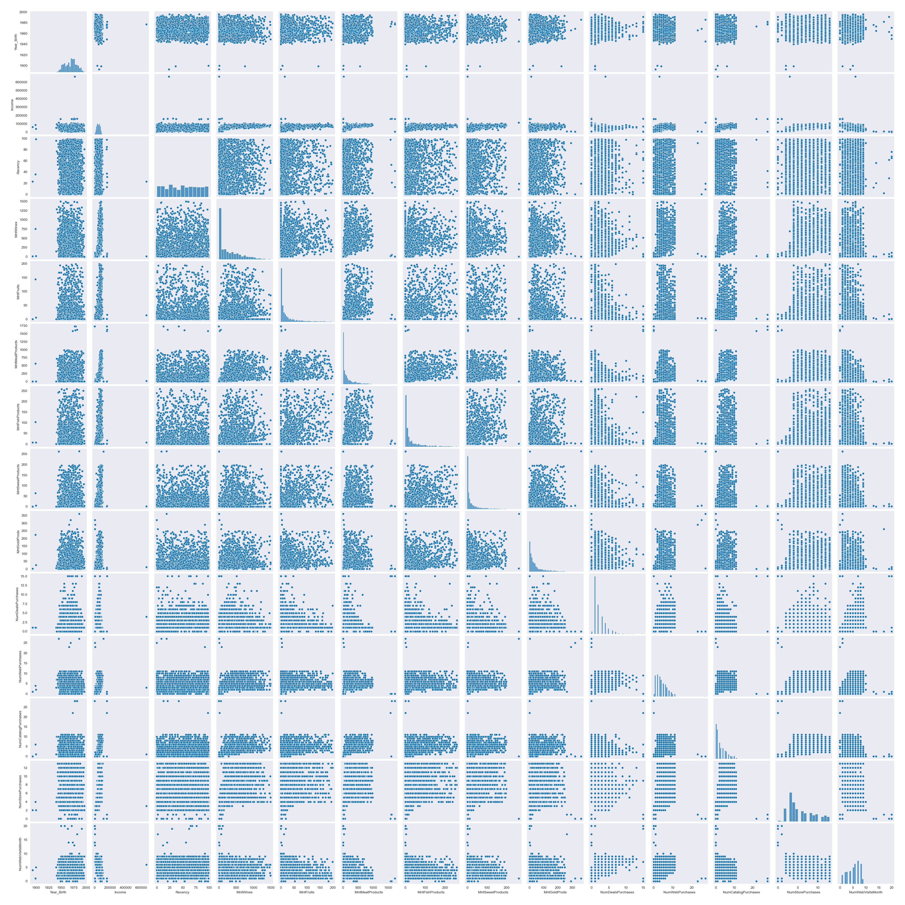
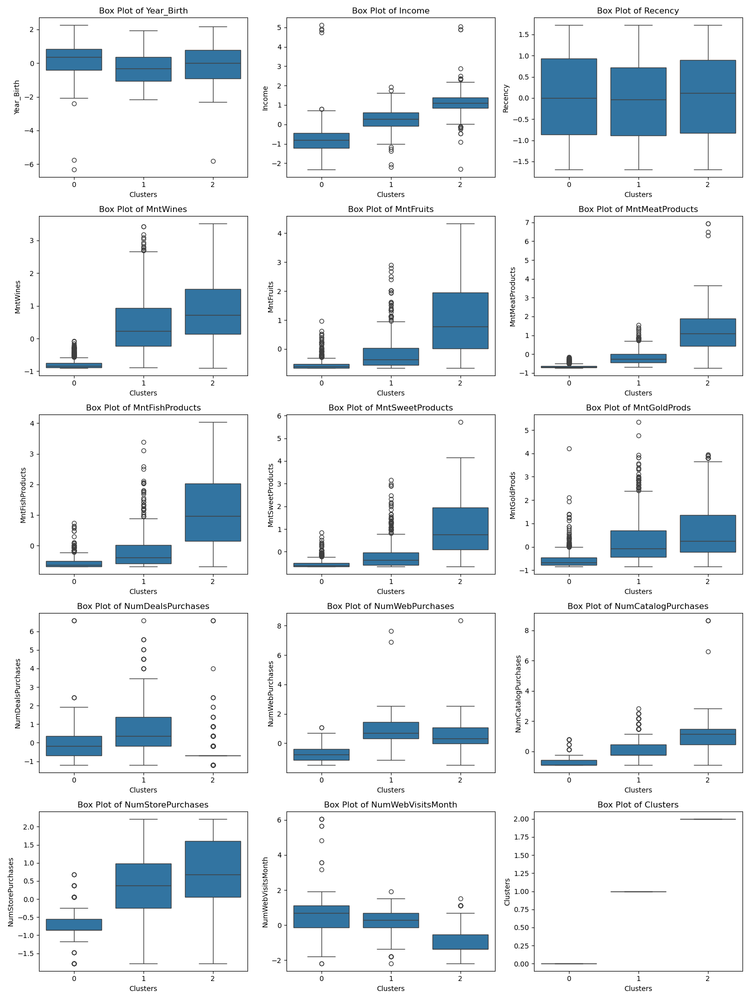
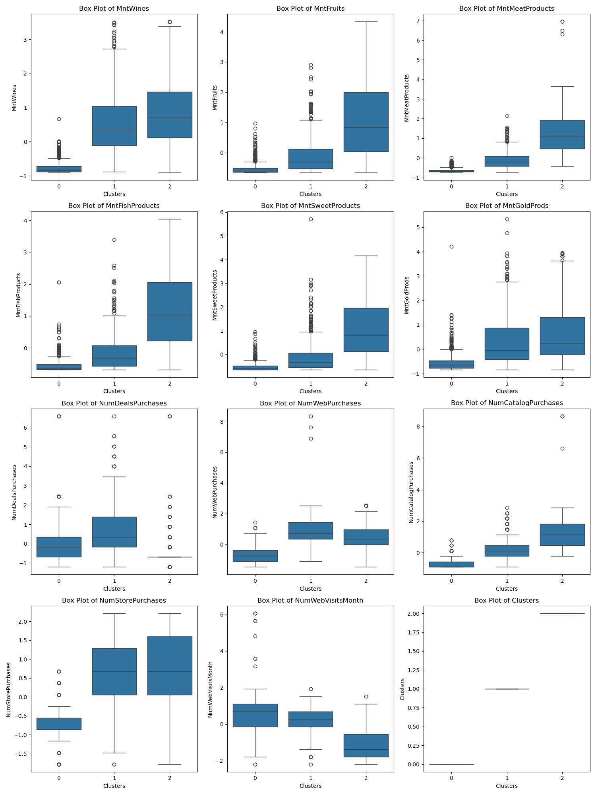

Link to Dataset
Introduce and explain data
The dataset contains customer profiles that can be used to identify similar subsets of customers in order to give more relevant recommendations, deals, or advertisements. Some of the features are customer birth year, number of children or teens living with the customer, the customer's income, how long since the last transaction, the amount spent on one of several categories of product (wine, fruit, meat, fish, sweet, and "gold"), the number of purchases made through the website or physical store, and whether the customer accepted specific marketing campaigns.
The first columns dropped were ID, Z_CostContact, and Z_Revenue, as none of these provide specific information. All "AcceptedCMP" columns, recording whether the customer accepted a marketing campaign, were dropped due to all being present in less than 25% of the records. Complain and Response columns were also dropped due to low prevalence. Columns on number of kids and teens living with the customer were removed due to low variance. Education, marital status, and customer join date were dropped for being non-numeric and more difficult to parameterize for clustering. Finally, 24 records were then dropped for having no value for income. One record where the income was entered as 666666 was removed for being multiple times larger than the next-highest income, potentially skewing results.
K-clustering involves selecting a number of clusters for the data to be split into. Once a number has been chosen by analysis with something like an elbow plot, an equal number of points are selected to be the initial centers. All points are associated with the closest center. All points in a given cluster are averaged and this average becomes the new center point. This is repeated until the centers do not move between iterations. I selected this model as it makes future data easier to implement, able to be included in its nearest cluster without requiring full model retraining.
Insert images and describe clusters
Explain this one
Explain this one
The most substantial positive impact from this research is for the company the data was obtained from. Better clustering of users can help design targeted advertising campaigns to give different customers more relevant deals and product suggestions. This improved marketing could lead to increased sales and revenue for the company.
For the customer, it could be argued that targeted advertising could help customers find products they need or would find useful and as such would be more satisfied with their purchases. They could also be given unique deals depending on how tbe company chooses to market to them.
Storing user data always contains risk. Even when lacking specific identifiers, when combined with other information, the data gathered and used here could be used to track customers beyond the intended scope of this research.
The most debatable impact from research like this is whether more targeted advertising is a net positive or negative. For the company, it helps them generate revenue from data they may already have. For users, it may help them find better products, but it may also encourage purchases they may not have otherwise made. Is this a good thing? Determining whether targeted advertising is a net benefit or not is outside of the scope of this project, but it should be considered in real-world applications.